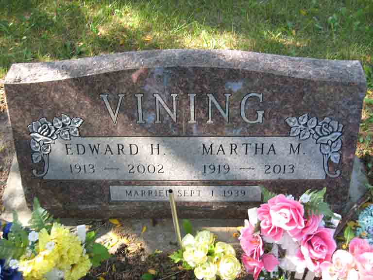

Documentation for Edward H. Vining - Martha M. Wudel
Death Data
Headstone for Edward H. Vining and Martha M. (Wudel) Vining, in Green Hill Cemetery, Alexandria, Hanson County, South Dakota (from Find A Grave):

\